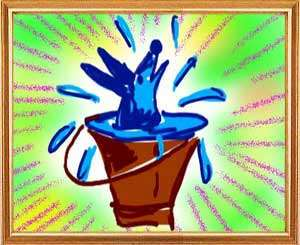
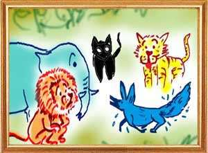
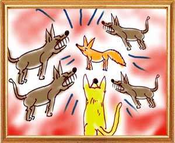

Chandaraka was a jackal living in a forest. One day, driven by hunger, he came to a nearby town in search of food. Seeing him, a group of mongrels began chasing and attacking him whenever possible. The jackal fled in panic and entering the house of a washer man hid in a vat full of blue used for bleaching clothes. When he came out, he became a blue animal. Thinking that he was not the jackal they chased, the mongrels dispersed.
The jackal came back to the forest with his body dyed in blue. When the lions, tigers, panthers, wolves and other animals in the forest saw him, they took fright and ran in all directions. They thought to themselves, “We do not know his power and strength. It is better we keep a distance from him. Haven't the elders warned not to trust him whose conduct, caste and courage are not known.”
Seeing them scared, the dyed jackal said, “Why do you run away like that. There is no need to fear. I am a special creation of God. He told me that the animals in the jungle here had no ruler and that he was nominating me as your king. He named me as Kakudruma and told me to rule all of you. Therefore all of you can live safely under the umbrella of my protection.”
All the animals in the jungle accepted him as the king. He in turn appointed the lion as his minister, the tiger as his chamberlain and the wolf as the gatekeeper. After distributing office to the animals, the new king Kakudruma banished all the jackals in the forest. The lions, tigers and the wolves killed other animals and brought them as food for the king. Taking his share, Kakudruma would distribute the rest of the kill among his subjects.
One day when the blue jackal was holding court, he heard a gang of jackals howling. Thrilled by the sound of his own ilk,Kakudruma began loudly responding in his natural voice. The lions and other animals immediately recognized that their king was after all a jackal and not a Godsend. They at once pounced on the blue jackal and killed him.